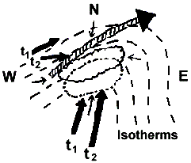
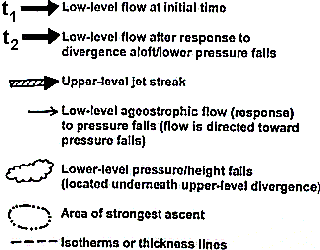
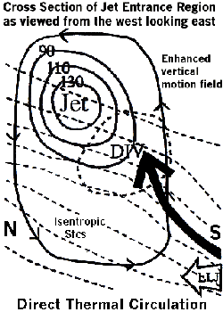

| ENTRANCE REGIONS OF JET STREAKS |
A "jet streak" refers to a portion of the overall jet stream where winds along the jet core flow are stronger than in other areas along the jet stream. The entrance (exit) region of a jet streak is where winds are accelerating into the back/upstream (decelerating out of the front/downstream) side of the streak. Within the entrance region of a jet streak, divergence (of the ageostrophic wind) usually occurs along and to the right of the jet core (i.e., right entrance region). The upper-level divergence causes pressure/height falls at the surface and/or lower-to-middle-levels underneath the upper divergence maximum. However, the upper divergence usually DOES NOT create a localized ascent maximum concentrated directly under the upper-level divergence field (i.e., the so-called "box" circulation is invalid; Fig. 1). Instead, Fig. 2 shows a plan view and Fig. 3 a vertical cross-section of more realistic processes that can happen in the atmosphere, as described below.
 |
Fig. 1: Idealized "box" direct thermal circulation in the entrance region of jet streaks. Warm air rises in the right entrance region; cold air sinks in the left entrance region. Horizontal ageostrophic flow occurs from colder to warmer air in low levels. However, air typically does not flow in a "box" as shown at left. |
|  |
 |
Fig. 2: Example plan view of a low-level/upper-level jet configuration along with areas of upper-level divergence/low-level pressure falls and ascent. The image at right identifies key elements of the schematic. Explanation of the diagram is given in the accompanying text. |
|  |
Fig. 3: Example vertical cross-section of a jet streak (solid lines are equal wind speed lines/isotachs in kts) and the divergence (bold dashed circle; DIV) and low-level jet (LLJ) isentropic ascent (large bold arrow) response to the upper divergence in the right entrance region of the jet. The outer solid line with arrowheads represents a simplified direct thermal circulation within the entrance region. Dashed lines are lines of equal temperature/isotherms. |
In a baroclinic system (systems that tilt with height), the lower-level pressure/height falls under the right entrance region/ divergence aloft cause a wind to be directed toward the pressure falls area (i.e., wind moves toward lower pressure). The wind moves toward the falls from all directions, including from the south where it is warmer and from the north where it is colder. This wind is the isallobaric component of the ageostrophic wind (small arrows in Fig. 2). South and/or east of the right entrance region/upper-level divergence/low-level pressure falls area, the southerly ageostrophic flow moving toward the falls area complements the environmental southerly flow already in place (southerly bold arrow labeled t1 in Fig. 2). Thus, an increase/ acceleration in the actual wind occurs near and south and/or east of the jet right entrance region (i.e., right rear quadrant of the jet streak).
This enhanced low-level flow (southerly bold arrow labeled t2 in Fig. 2 and LLJ in Fig. 3) then rises isentropically toward the upper-level divergence zone (large bold arrow in Fig. 3). Therefore, the area of strongest ascent (dashed-dotted circle in Fig. 2) may actually occur south and/or east of the maximum upper-level divergence area in baroclinic systems. In addition, as upper-level divergence increases with time, so will isentropic lift as the actual wind accelerates up the isentropic surface toward the pressure/height falls and enhanced divergence zone. In more "vertically stacked" systems, then the ascent maximum may be located closer/underneath the divergence maximum aloft.
At the same time, underneath or to the left of the jet entrance region, the low-level northerly or northwesterly ageostrophic winds (i.e., the small arrows to the north and west of the jet streak in Fig. 2) and the arrowhead on the outer solid line in the bottom of Fig. 3) directed toward the pressure falls area help to direct colder air toward the region of upward motion farther south and/or east (i.e., the bold t1 arrow to the northwest of the jet streak in Fig. 2 turns and becomes t2). This could help promote the maintenance of or even changeover to frozen or freezing precipitation in borderline rain/snow cases. The northerly ageostrophic wind component also may slightly negate the overall southerly low-level flow resulting in low-level convergence underneath/near the entrance region.
Now, we have an entrance region of a jet streak causing upper-level divergence which results in increased lift as a stronger low-level jet south of the entrance region causes enhanced moisture transport and warm advection up the isentropic surface. At the same time, colder air may be trying to filter in from the north. The result is that we get a tightening of the thermal/temperature gradient between the warm and cold advection zones and due to the convergent winds. The tightening thermal gradient is called frontogenesis, which in itself can elicit an atmospheric response that results in a direct thermal circulation (low-level warm air rising on the warm side of the gradient and cold air sinking farther north on the cold side). The upward motion/vertical circulation associated with frontogenetical forcing appears to enhance or focus the vertical circulation associated with the jet entrance region and isentropic motion.
One more item to consider: In direct thermal circulations (which occur in jet entrance regions and in response to frontogenesis), low-level ascent usually is on the warm side of the jet core and/or frontogenetical zone. On the warm side, if relatively unstable air is present (even near neutral stability air), the vertical motion values will be "pumped up" even more, because forcing for ascent will result in stronger upward motion in relatively unstable versus stable air. The ascent will then tilt northward with height toward cold air.
So, the end result is we have entrance regions of jet streaks, isentropic lift, frontogenesis, and possibly some degree of instability all seemingly working together in a complicated manner to cause strong upward motion. Moisture and system movement/propagation then also must be considered to determine if and where heavy precipitation will occur and how long the precipitation will last in any one area. Given sufficient moisture, these processes can result in heavy snow in the cool season and mesoscale convective system (MCS) development in the warm season, even if there is little or no surface low development. Certainly, these processes do not always work "just right" together to cause extreme weather conditions. But, one should be aware that processes in the atmosphere cannot always be separated from one another; they often are inter-related.
These processes worked together to produce a record snowstorm in Kentucky on January 16-17, 1994. In fact, 1 to 2 feet of snow that fell across parts of north-central Kentucky in less than 12 hours. In this case, there was little surface low development, but strong isentropic lift, a pronounced entrance region of a jet streak which increased in time, and substantial frontogenesis all where present, along with relatively unstable air aloft and upstream that helped intensify upward motion and produce elevated convection.